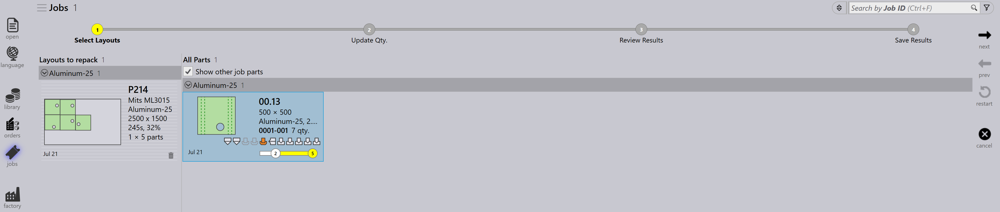
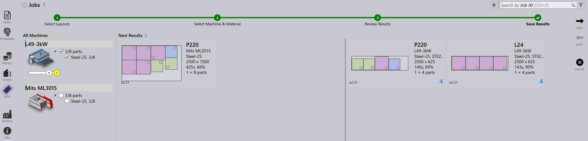

Panel rozvrhnutia
Táto sekcia vysvetľuje akcie súvisiace s rozvrhnutím ako Odoslať do stroja…, Obnovenie zo stroja…, Exportovať výstupy, Označiť ako ukončené…, Pridať dielce…, Prispôsobiť/zlúčiť…, Rozdeliť tabule s rozmiestnením… a ďalšie možnosti používané na správu inštancií rozvrhnutí.

|
|


Odoslať do stroja…
-
Keď je hniezdo pripravené (naplnené alebo naliehavo potrebné), môžete ho odoslať na stroj.
-
Kliknite pravým tlačidlom na hniezdo a vyberte Odoslať do stroja….
-
Priečinok sa vytvorí automaticky, pomenovaný podľa hniezda.
-
Výstupné súbory (fxlyt, NC, report, csv) sa exportujú do umiestnenia výstupu JOB.
-
Hniezda odoslané na stroj sú zobrazené s modrou fajočkou.

| Po uvolnení už tieto hniezda nie sú znovu skúšané na prebalenie. |
Obnovenie zo stroja…
-
Ak výstup potrebuje overenie alebo aktualizáciu (napríklad pridanie viacerých dielov):
-
Kliknite pravým tlačidlom na exportované rozvrhnutie.
-
Vyberte Obnovenie zo stroja….
-
-
Výstupné súbory a priečinok (fxlyt, NC, report, csv) sú odstránené.
-
Hniezdo sa opäť stane upraviteľným.
-
Môžete vykonať zmeny a znovu ho odoslať na stroj.

Exportovať výstupy
-
Kliknite pravým tlačidlom na ľubovoľné rozvrhnutie (hniezdo), ktoré bolo odoslané na stroj, a kliknite na Exportovať výstupy.

-
Možnosť Export Outputs exportuje NC, Report a Layout súbory do príslušných výstupných priečinkov stroja.
-
Táto možnosť znovu vygeneruje NC súbor s aktuálnymi nastaveniami jednotiek pre rozvrhnutie.
| Export Outputs nie je k dispozícii pre rozvrhnutia, ktoré sú dokončené a rozvrhnutia, ktoré čakajú v rade na prebalenie. |
Mark complete
-
Po spracovaní hniezda na stroji kliknite pravým tlačidlom na hniezdo a vyberte Označiť ako ukončené….
-
Môžete vybrať viacero hniezd a označiť ich ako dokončené naraz.
-
Keď je hniezdo označené ako dokončené:
-
Je zošedené, presunuté na koniec zoznamu a zobrazené so zelenou fajočkou.
-
Rozvrhnutie je odstránené zo zoznamu aktívnych rozvrhnutí.
-
Stavy dielov a prác sú aktualizované a spracované množstvá sa presunú do dokončeného stavu.
-
Výstupné súbory pre toto rozvrhnutie sú odstránené z umiestnenia výstupu stroja, aby sa predišlo duplicitnému použitiu.

-
Pridať dielce…

-
Použite túto možnosť na pridanie viacerých dielov do relatívne slabo zabaleného rozvrhnutia. Ako interaktívne ukladanie, toto je možnosť riadená sprievodcom a môže sa použiť na jedno alebo viacero rozvrhnutí naraz.
-
TruSmartCAM pripojí sprievodcu prebalením rozvrhnutia v hlavnej pracovnej oblasti, keď sa táto možnosť použije. Podržte kláves Ctrl a vyberte jeden alebo viac dielov, ktoré majú byť zabalené na rozvrhnutí(niach), a stlačte Nasl..

-
Vybrané diely sú zobrazené v ďalšom kroku s upraviteľným stĺpcom množstva. Aktualizujte množstvá dielov v prípade potreby v poli Update Qty. Kliknutím na Nasl. pokračujte v ukladaní. Upozorňujeme, že množstvá možno iba zvýšiť, nie znížiť.

-
Všetky rozvrhnutia sú uložené oddelene a uložené výsledky sú zobrazené s novo zabalenými dielmi umiestnenými na nich. Výberom rozvrhnutia sa zobrazia všetky existujúce diely rozvrhnutia. Výsledok sa automaticky zahodí, ak počas prebalenia nie je umiestnený žiadny nový diel. Rozvrhnutie s viacerými kópiami môže po prebalení viesť k rôznym vzorom.

Prispôsobiť/zlúčiť…
-
Tento príkaz založený na sprievodcovi možno použiť na prispôsobenie rozvrhnutia z jedného stroja na druhý, keď je pôvodný stroj nefunkčný alebo keď je potrebné vyvážiť pracovné zaťaženie stroja.

-
Môže sa použiť, keď je plánovaný hárok vypredaný a rozvrhnutie je potrebné opätovne naplánovať na iný dostupný hárok.
-
Môžete zlúčiť rozvrhnutia zabalené na menších hárkoch do väčších hárkov na efektívnejšie použitie materiálu.
-
Môžete rozdeliť rozvrhnutia zabalené na väčších hárkoch do menších hárkov, ak nie sú k dispozícii veľké zásoby hárkov.
-
Môžete zvýšiť efektivitu balenia viacerých rozvrhnutí (dokonca z rôznych strojov) ich zlúčením.
-
Ak to chcete použiť, vyberte jedno alebo viac rozvrhnutí a kliknite na Prispôsobiť/zlúčiť… na otvorenie sprievodcu v pracovnej oblasti.

-
Ľavý panel zobrazuje všetky vybrané rozvrhnutia a panel Diely zobrazuje diely rozvrhnutia.

-
Vyberte cieľový stroj a materiál hárka, potom kliknite na Nasl. na vykonanie opätovného ukladania.
-
Nové výsledky hniezda sú zobrazené v paneli výsledkov.

-
Kliknutím na Nasl. uložte prispôsobené alebo skompaktované rozvrhnutie.

Rozdelenie rozvrhnutia
Možnosť Rozdeliť tabule s rozmiestnením… vám umožňuje rozdeliť existujúce rozvrhnutie na viacero rozvrhnutí úpravou množstiev bez potreby opätovného vykonávania nástrojov alebo ukladania.
Táto funkcia je obzvlášť užitočná v nasledujúcich scenároch:
-
Keď potrebujete vyrobiť časť celkového množstva okamžite, zatiaľ čo naplánujete zostávajúce množstvo na neskoršiu výrobu.
-
Keď je potrebné distribuovať výrobné požiadavky naprieč viacerými zmenami alebo dňami na optimalizáciu pracovného postupu a využitia zdrojov.
-
Keď je konkrétny stroj dočasne nedostupný alebo obsadený a potrebujete upraviť rozvrhnutie tak, aby vyhovovalo aktuálnym výrobným obmedzeniam.
Ak chcete rozdeliť rozvrhnutie, vykonajte nasledujúce kroky:
-
V zobrazení rozvrhnutí vyberte požadované rozvrhnutie.

-
Kliknite na Rozdeliť tabule s rozmiestnením….

-
Zadajte požadovanú hodnotu v Nové kópie.

-
Kliknite na OK.

Vybrané rozvrhnutie je teraz rozdelené na dve rozvrhnutia s upravenými množstvami.